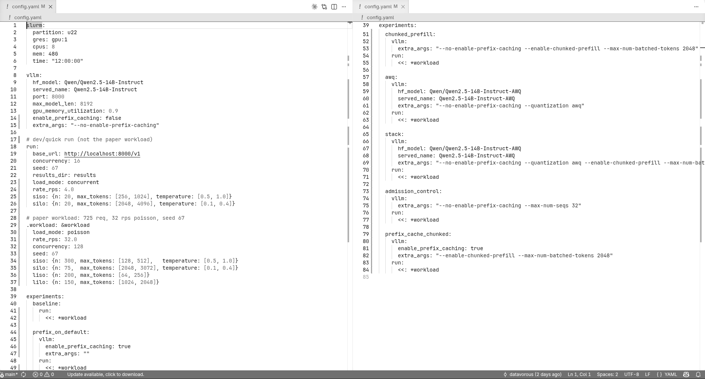
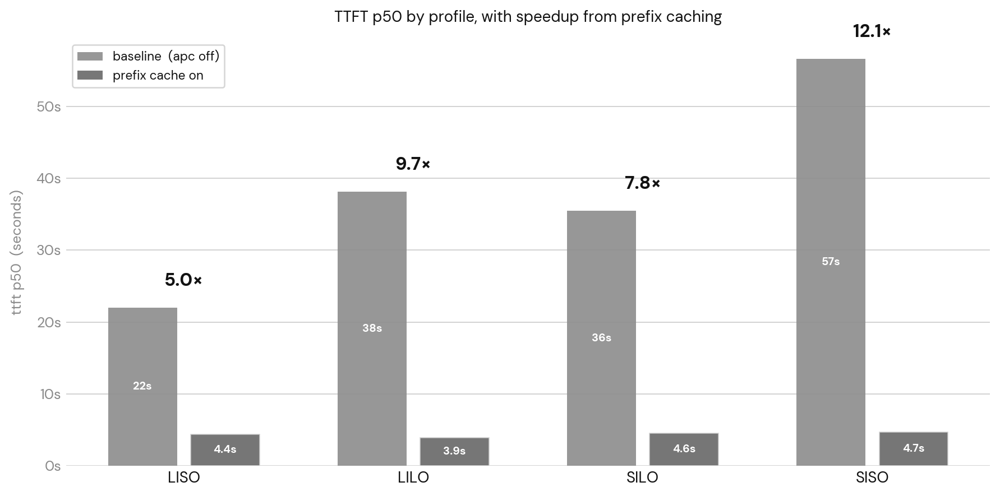
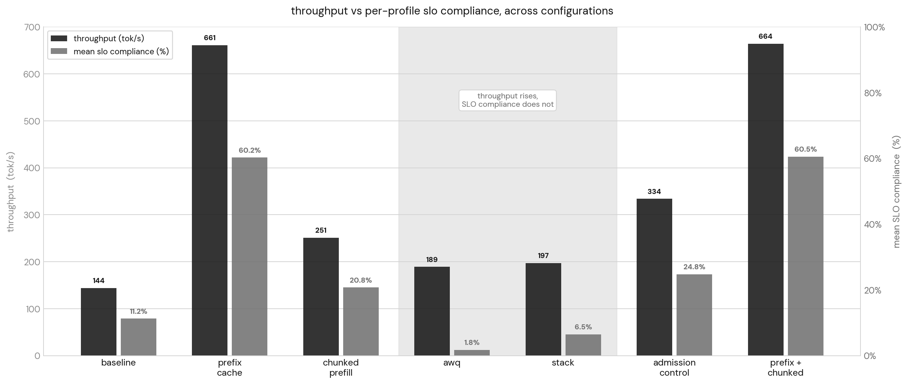
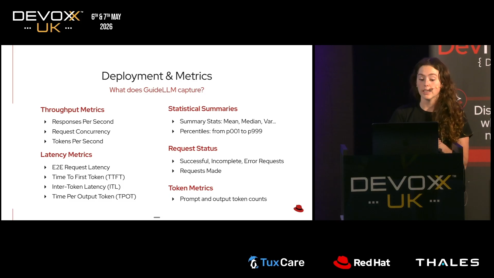
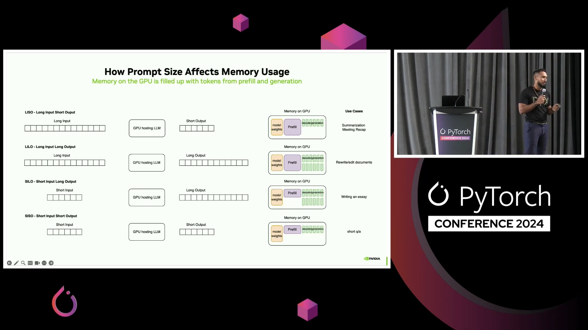

most inference posts pick a shiny optimization, run it against a vague benchmark, and report a percentage. i want to go the other way.
last weekend, while talking with tanay from sarvam ai, i first came across this phrase: "token factory". now, sitting in a lab full of idle gpus, i got this idea to simulate different workload profiles for different "token factories".
not every optimization helps every workload. for a company which deals only with rag and summarisation, i would not bother with speculative decoding. similarly for something like character ai, with short conversations as the main goal, i would focus heavily on optimizing the decode stage.
i couldn't find any case-by-case study on this exact topic, so i tried to do it myself.
the setup
a single rtx 6000 ada for now, running vllm. we will be serving qwen2.5-14b-instruct with an 8k context window and at 90% gpu memory utilization. i created a small harness using claude code to make it easier to iterate between configurations, launch experiments, and collect metrics, along with a workload generator that produces four request classes: siso (short input, short output), silo (short input, long output), liso (long input, short output), and lilo (long input, long output).
for the baseline, i wanted something resembling a busy monday morning. requests arrive according to a poisson process at 32 requests/sec, with up to 128 concurrent requests in flight. the workload is intentionally mixed - hundreds of short chat style requests, long form summarization jobs, code generation heavy prompts, and long context generation tasks all competing for the same gpu. now we can observe which bottlenecks emerge naturally under realistic pressure.

i use a config.yaml file to carry out my experiments. the default run: block is overridden under the experiments: block. in this case, the baseline is just the defaults plus a few key overrides (poisson at 32 rps, 128 concurrent). sweep mode exists in the harness but the baseline doesn't touch it.
this whole setup is a proxy. real production traffic is unavailable and would be unrepeatable anyway. the shape of the curves and the relative effect of each optimization will transfer to a similarly configured production environment, it'd be just the deltas.
the eyes they never lie, except when they do.
the first thing i did after the baseline run was build the heatmap of prompt tokens against completion tokens, expecting four neat clusters at the four corners of the workload.

look at the title. the heatmap draws roughly a fifth of the requests the run actually sent. the other four-fifths are not in the picture because the y axis is completion tokens and a request that never completed has no value to place there. so they vanish from the figure entirely. looking at where the density lives, the only region that read as a real distribution is the siso cluster at the bottom-left, while the others are pretty scattered.
now this is lowkey survivorship bias. i wanted to see how many survived and how many did not, so i plotted completed and failed requests together against input token length.

roughly four out of every five requests offered to this server did not come back. and the failure percentage points all hover around 78 to 81%. uniformity...what can that mean?
one hypothesis is that, if the server were doing anything intelligent under pressure (say fair share scheduling, biased toward cheap requests) i.e. anything intelligent under pressure which could have prioritized one shape over another then things could have looked different.
things are flat because the scheduler, when it runs out of room, is not choosing. requests arrive faster than the server can finish them, so they pile up in vllm's waiting queue. the scheduler tried to admit as many as fit in kv memory, the kv fills, the scheduler has to preempt already-running sequences to make room for new ones, the preempted sequences go back to the queue to be recomputed later, and the loop continues until the client times out. as nothing is being chosen against, the damage falls on everything.
the vllm scheduler does ship a priority based policy that would preempt the lowest priority running request instead of just popping whatever sits at the back of the queue, but it requires clients to pass a non standard priority field on every request, and no off the shelf openai compatible client does that. what you get is the fcfs behaviour i just described.

what this gives us, at the close of the diagnostic stage, is a sense of where each of the four traffic shapes will need attention.
siso loses most of its requests despite each one being trivially small to serve, which means the bottleneck for short traffic is the queue. silo loses most of its requests with the longest output bins dying most, which means the bottleneck there is decode throughput per stream. liso loses most of its requests with the longest input bins dying most, which means the bottleneck is prefill cost. lilo loses most of its requests for both reasons at once.
these are the four hypotheses which i will be testing, but before that we need to define what counts as "good". we need to know what this hardware should be capable of because an honest optimization story needs to know how close we are to them.
what counts as good
throughput is the number which every inference benchmark reports, and (if i understand correctly) is the easiest to lie with. instead, the honest metric is goodput. bentoml explains it aptly:

the slos for the rest of this post i will keep deliberately generous such that our otherwise good optimizations are not accidentally invalidated.
siso: ttft <5s. silo: itl p95 <250ms. liso: ttft <5s. lilo: itl p95 <250ms.
the disaster baseline's goodput against these slos is close to 0. moreover, i came across gil tene's presentation on coordinated omission (slides here) during my research and i think they are worth mentioning here.
in simple words, under overload, even the load generator can fall behind schedule. measuring latency from when a request actually left the client hides the time the user was already waiting, so we measure from when the request was supposed to be sent.
similarly, the beginning and end of a load test contain startup and shutdown effects that do not reflect normal operation. we therefore compute percentiles only over the stable middle portion of the run.

a later audit found two bugs: latency is measured from actual send time, not the intended poisson arrival time, and per profile %iles skip the stable window trim. both make the absolute numbers in this post optimistic. the relative ordering of optimizations is unaffected. fix is in the followup.
what this hardware should actually do
all references were taken from nvidia's ada architecture whitepaper (pages 28-30 are relevant).

we get a bf16 dense tensor compute of 364.2 tflops, memory bandwidth of 960 gb/s, and 48gb of vram.
there is the prefill phase, and there's the decode one. prefill is compute bound, and most of the computations are in the form of gemms. with our model (qwen2.5-14b), we would need roughly 28 gflops per prompt token (2 * params * tokens). that gives us the theoretical prefill ceiling of around 13k toks/s before overhead.
decode is memory bound. it's just a matrix-vector op (gemv) with nearly zero arithmetic intensity. the bottleneck is entirely consumed by streaming ~28 gb of weights across the bus for every single token. dividing 960 gb/s by 28 gb caps a single stream at ~34 tokens/sec (nvidia ada whitepaper), which is the upper bound before kv reads, attention compute, and kernel launch overhead are accounted for. the only way to save throughput here is batching.

coming back to kv cache, every active sequence holds a key value tensor of roughly 196kb per token. after vllm loads ~28 gb of bf16 weights and reserves overhead, ~15-17gb of the 48gb is left. that's around 80k to 90k kv tokens in flight.
now an average lilo holds around 3,000 kv tokens at steady state, meaning just 25 concurrent requests would completely use up our ~80k token budget. this is why our physical memory caps our effective concurrency at ~28 before pinning kv at 100%. that's why the baseline collapsed! the card simply lacks the memory depth to hold this many long context requests at once. vllm's actual kv budget after framework overhead lands closer to 57k tokens, which is what shows up in the experiments below.
predictions before measuring
some of them failed after i ran the experiments on real hardware.
- if we use prefix caching then the cache would be storing kv blocks for token sequences it has seen and would reuse them on subsequent requests that start the same way, skipping the prefill gemm for the shared portions. lilo and liso should have their ttft drop substantially (as long prompts overlap due to their code file corpus), and siso and silo would barely move.
- chunked prefill in here would break prefills into pieces and interleave them with decode steps. a large token prefill on the baseline would be monopolizing the gpu for over a second, starving every other request's decode. i am predicting that liso/lilo ttft would improve dramatically, siso would improve indirectly, and silo would get slightly worse.
- quantization (awq to 4bit) would roughly quarter weight memory and should double decode throughput, as each step will read a fraction of the bytes from the hbm. silo and lilo are direct beneficiaries. similarly siso would benefit indirectly. liso would benefit least for being prefill bound.
- stacking multiple methods (chunked prefill + awq) i.e. stacking two known good levers to see if they compose well. perhaps the best for lilo.
i have intentionally scoped down my experiments to these 4 cases, otherwise the post will be longer than my will to live.
prefix caching
i turned on automatic prefix caching, left every other variable identical to the baseline, and reran. overall, the completion rate rose from 21% to 75%, and throughput increased 4.6x.
| metric | baseline | cache on |
|---|---|---|
| completion rate | 21% | 75% |
| throughput | 144 tok/s | 661 tok/s |
| p50 | 40.9 s | 4.5 s |
| cache hit rate | - | 71.60% |
throughput increased 4.6x - i would like to be very careful with this claim. prefix caching skips prefill work for tokens it has seen before. more requests fit through, so aggregate output goes up. no individual stream is generating tokens faster. the 4.6x is the system breathing again, not a decode speedup (benchmark,
design doc).
what the cache is actually catching is the file bodies in the liso and lilo corpus, being reused across requests after the model sees each file once. with five source files in the corpus and a few hundred requests drawing from them, every file ends up cached after a few sightings, and the rest of the requests effectively skip the expensive prefill entirely - which is exactly the workload that prefix caching is designed for: document qa, code review, rag style workloads where the same content reoccurs across many user queries.
| metric | baseline (s) | cache on (s) | speedup |
|---|---|---|---|
| siso | 56.6 | 4.67 | 12x |
| silo | 35.5 | 4.56 | 7.8x |
| liso | 22 | 4.4 | 5x |
| lilo | 38.1 | 3.92 | 9.7x |
the surprise was in the profile breakdown though. i predicted that liso and lilo would benefit most, since they were the profiles with the long shared prefixes, and they did benefit, but siso benefited more.

which made no sense if you assume the cache is only helping the profiles whose prompts it can actually reuse. it took me a minute to see the most plausible (causal?) explanation. the timing is consistent with siso sitting in vllm's waiting queue behind liso and lilo requests whose long prefills were monopolizing the gpu: in the baseline, siso's ttft p50 is 56.6s despite a median prompt of 83 tokens, while liso's ttft p50 is 21.9s with a median prompt of 1440 tokens. from there we can see that a 17x shorter request waiting 2.6x longer for first token is hard to explain without queue contention. turning on the cache made liso and lilo prefills largely disappear (73.7% cache hit rate), and siso ttft dropped to 4.67s. the bottleneck for the cheap profiles was most likely the expensive profiles' prefill cost. the per profile queue time (vllm's vllm:request_queue_time_seconds split by request tag) would confirm this directly.
chunked prefill
as we saw earlier, a long prefill monopolizes the gpu until it's done, during which every other request's decode is frozen. chunked prefill breaks the prefill into pieces (in this case i tried it with 2048 tokens at a time) and interleaves them with decode steps for in flight requests. that makes a 4000 token prefill become two chunks with decode work happening in between.
i expected this to improve liso/lilo ttft (their prefills no longer block others), improve siso indirectly (it stops queuing behind those prefills), and mildly hurt silo itl (its decode now shares the gpu with prefill chunks of other requests).
| metric | baseline | chunked prefill |
|---|---|---|
| completion rate | 21% | 32% |
| throughput | 144 | 251 |
| ttft p50 | 40.9 s | 188 s |
| itl p50 (siso) | 182 ms | 101 ms |
| itl p50 (lilo) | 216 ms | 111 ms |
| preemptions | 262 | 412 |
the metric i predicted it would show up in was wrong, though the mechanism i predicted was partially right.
chunked prefill spreads each prefill across multiple scheduler iterations, which keeps decode progressing instead of freezing it. but it also means any individual request's prefill takes longer wall clock time to complete, because it's now competing with decode for slots. ttft got worse because the cost of slicing appears to have exceeded the benefit of unblocking at this arrival rate. chunked prefill is designed to let new requests start sooner instead of waiting behind a monolithic prefill, but at sustained overload, every request pays the slicing tax and only some of them benefit from the unblocking. itl improved because no single prefill can monopolize the gpu anymore, so decode steps come out more regularly.
the throughput number counts both prefill and decode tokens. chunked prefill spreads prefill work across more iterations, so per-iteration token counts go up while per-request wall-clock latency goes up too. the aggregate metric and the per-user metric are measuring different things.
if i only looked at ttft, i would probably call this a regression. if i only looked at aggregate throughput, i would probably call it an improvement. preemptions also rose from 262 to 412 because chunked prefill keeps more prefills concurrently in flight instead of serializing them, which raises sustained kv pressure and triggers more preemptions.
kv usage still sits at 100%. chunked prefill, like caching before it, is now changing how the scheduler spends that budget.
quantization, with a surprise
decode is memory-bandwidth-bound, so if weights go from bf16 to 4 bit (qwen2.5-14b-instruct-awq), each decode step should have to pull roughly a quarter of the bytes from hbm. you don't quite get a 4x speedup because dequantization still exists, but nearly 2x improvement in single stream decode didn't seem unreasonable. the other thing i expected was that the smaller weights would leave a lot more vram available for kv. on this setup, that should have been almost comically helpful because the workload is visibly kv bound. in practice, the in flight kv budget jumps from around 57k tokens to 171k tokens.
the freed vram did get handed back to the kv pool, the budget really did triple, and preemptions dropped from 262 to 132 because the scheduler could now afford to keep more sequences resident instead of constantly evicting and re-admitting them.
| baseline (bf16) | awq (int4) | |
|---|---|---|
| completion rate | 21% | 34% |
| throughput | 144 tok/s | 189 tok/s |
| ttft p50 | 40.9 s | 57.6 s |
| itl p50 (siso) | 182 ms | 557 ms |
| itl p50 (lilo) | 216 ms | 316 ms |
| preemptions | 262 | 132 |
| kv budget | 57k tok | 171k tok |
but the decode got slower. siso itl is roughly 3x worse and lilo degraded by almost 50%.
though lilo degraded less than siso likely because lilo runs at effectively higher per step batch (more concurrent decode tokens), which is closer to the regime where awq kernels amortize dequantization cost.
throughput did get better, but only from 144 tok/s to 189 tok/s, probably because the larger kv budget was just allowing more requests to coexist. hence the extra throughput wasn't coming from any individual request with faster decoding.

the server is doing more work overall, but each stream is progressing more slowly. from a user's perspective, every token arrives later even though the dashboard says throughput went up.
the regression had to be somewhere higher in the stack, and once i looked at what awq kernels actually do, it was obvious. awq is a w4a16 storage scheme, where weights are stored as int4 with fp16 scaling factors, but every matmul dequantizes them back to fp16 and runs the gemm in fp16 (vllm source). at high batch sizes the dequantization overhead disappears into the pipeline. at the m=1 gemv shape that decode uses, the dequantization cost sits on the critical path without being amortized across a batch dimension. (this is a documented behavior btw
pr #2566,
issue #2268) vllm's awq path was designed for prefill-heavy throughput, not interactive decode .
the system level scheduler becomes happier because memory pressure drops, while the individual decode path becomes slower because each token now carries extra work that the hardware shape can't hide. these are the two things happen simultaneously.
awq + chunked prefill
the obvious question after the previous two sections was whether these two techniques can fix each other's weaknesses. awq's biggest problem was per-token decode latency, especially on siso where itl had exploded to 557ms. chunked prefill's biggest win was making decode more regular by preventing long prefills from monopolizing the gpu.
intuitively, they seemed complementary. awq gives me a much larger kv pool, chunked prefill gives decode more opportunities to run, and maybe the ugly itl numbers disappear. so i turned both on and reran everything.
the answer? yes.
and, uh..not really
| baseline | awq | stack | |
|---|---|---|---|
| completion rate | 21% | 34% | 36% |
| throughput | 144 tok/s | 189 tok/s | 197 tok/s |
| e2e p50 | 110 s | 119 s | 91 s |
| itl p50 (siso) | 182 ms | 557 ms | 367 ms |
| preemptions | 262 | 132 | 258 |
chunked prefill does pull awq's itl back in the right direction. siso drops from 557ms to 367ms, which is still substantially worse than baseline but no longer catastrophic. e2e latency also falls to 91 seconds, which actually ends up being the best e2e number in this entire post. so if the thing you care about is getting long jobs finished sooner, the stack genuinely works.
the part i didn't expect was what happened to preemptions. awq by itself had cut them almost in half because the scheduler suddenly had three times more kv headroom. after enabling chunked prefill, they climbed back to roughly the original disaster baseline level (~260). the kv budget is still at 171k tokens. but chunked prefill admits more concurrent in flight prefills instead of serializing them, which is consistent with what consumed the additional headroom which awq prevoiously provided.
so the two optimizations both operate on the same resource from different directions. stacking them doesn't preserve both benefits.
:(
this also ended up being one of the most deceptive results in the entire experiment. when i looked at per profile slo compliance, it was among the worst configurations: 1% on siso, 1% on silo, 9% on liso, and 15% on lilo. the stack really is getting more work done. it's just getting more work done by fitting more requests into the same period of time, not by making any individual request feel faster. the server is happier. the users definitely won't be.
the tradeoff matrix
this is my entire post summarised. two additional configurations appear that weren't covered in their own sections. admission control caps the number of concurrently running requests (i used vllm's --max-num-seqs) to keep kv from filling and triggering cascading preemptions, it helped with long output profiles, but does nothing for siso. similarly prefix + chunked stacks automatic prefix caching with chunked prefill was pretty much identical to prefix caching alone, at higher preemption cost.
| baseline | prefix | chunked | awq | stack | admit | prefix+chunk | |
|---|---|---|---|---|---|---|---|
| siso (chat) | 0% | 43% | 1% | 0% | 1% | 0% | 44% |
| silo (code gen) | 20% | 68% | 44% | 0% | 1% | 52% | 68% |
| liso (review/rag) | 6% | 56% | 6% | 5% | 9% | 6% | 56% |
| lilo (refactor) | 19% | 74% | 32% | 2% | 15% | 41% | 74% |
slo compliance: fraction of offered requests that met the per-profile latency budget. siso/liso: ttft <5s. silo/lilo: itl p95 <250ms. bold = above 40%.
look at the awq column. 189 tok/s throughput, sounds fine, but zero siso compliance, zero silo compliance, 2% lilo. nobody is getting a usable response. and that's THE GAP between throughput and goodput.
the prefix caching column is the only one that doesn't look broken. every profile above 40%, 4/4. everything else either flatlines on siso or has at least one profile in crisis. automatic prefix caching is enabled by default in vllm v1 (docs), which has been the default engine since 0.8.1. if you're on a recent vllm, this is already on. if you're on an older version, then turn it on, perhaps?
two things in the matrix are unintuitive in my opinion.
admission control helped silo and lilo (52%, 41%) but did nothing for siso slo compliance, it stayed at 0% even though completion rate hit 44%.
lower in flight concurrency does help the queue drain faster, but at 32 rps the http queue still grows unboundedly, and siso's ttft budget is too tight to survive any meaningful wait.
prefix caching plus chunked prefill is statistically identical to prefix caching alone. the reason is that prefix caching skipped 73.7% of the prefill work, which means there's almost nothing left for chunked prefill to chunk. it doesn't conflict - it just has nothing to do! and then it charges you 405 preemptions (up from 334) for the privilege of doing nothing.
if you turn on prefix caching, you're mostly fine across all four profiles, given your workload has content overlap. whereas chunked prefill alone is a worse production config than baseline for any siso heavy product (1% slo compliance vs 0% is not a win !!), awq is dangerous on interactive workloads because its kernel path dequantizes weights to fp16 before the matmul (vllm source), and that overhead sits on the critical path (the bandwidth savings will show up in prefill sized batches) and therefore the stack is the clearest example in this post of an optimization that improves every aggregate metric while making the per user experience terribly worse.
hence, if your workload has prefix sharing, things like rag, system prompts, document qa, code review over a known codebase - turn on prefix caching. free lunch (even the docs call it that). the next best option depends on your dominant profile would be admission control for long output traffic, separate clusters for short output traffic, because no vllm flag fixes the waiting-in-line problem for siso at 32 rps.
essentially, everything else in the matrix earns its place by losing. the diagnosis of the entire thing was the fun part.
so what
inference optimization is a diagnosis problem, much like a sherlock holmes' story line, except you just play with flags and kernels.
every now and then someone comes up with a new optimization, and shows the exact benchmark where it outperforms others. but what happens when others are stacked together? what happens when my workload is totally different from theirs? why should i care for long conversations when my entire work is to handle 10 words at a time?
we also saw that awq and the stacked config are examples of the same failure mode because the aggregate metrics improve while per user experience degraded badly. despite the throughput going up, the goodput goes to zero.
the matrix is actully the whole post in one table. no column is uniformly green. no row is served well by everything. the right configuration is the one that matches the traffic shape, and most deployments don't know their traffic shape because they never measured it (or do they?)
i think that's the actual job - not picking the optimization but figuring out what's slow and why, before reaching for the toolbox.
code is at datavorous/to-fa. if this is the kind of systems work you need done -
get in touch (i am looking for an internship)
references
gil tene - how not to measure latency
bentoml - llm inference metrics / goodput
acknowledgements
i built my own benchmarking harness for this, which was fine, but i later found out guidellm (redhat) already does most of what i wrote. legare kerrison's devoxx uk talk covers it well - would have saved me a weekend. thanks for putting that out.

the siso/silo/liso/lilo framing came from mark moyou's pytorch talk (nvidia). before watching it i hadn't thought to treat traffic shapes as distinct objects with different hardware bottlenecks. that framing is the whole premise of this post.
